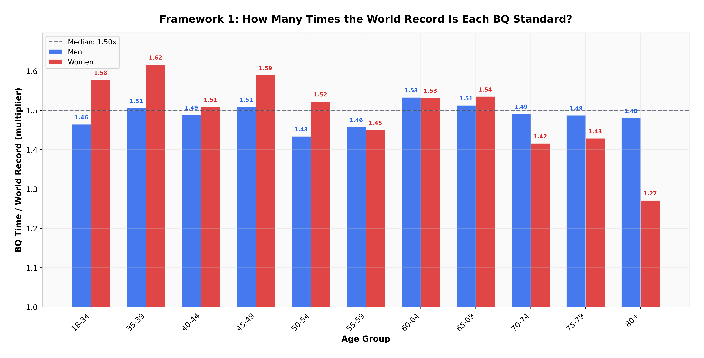
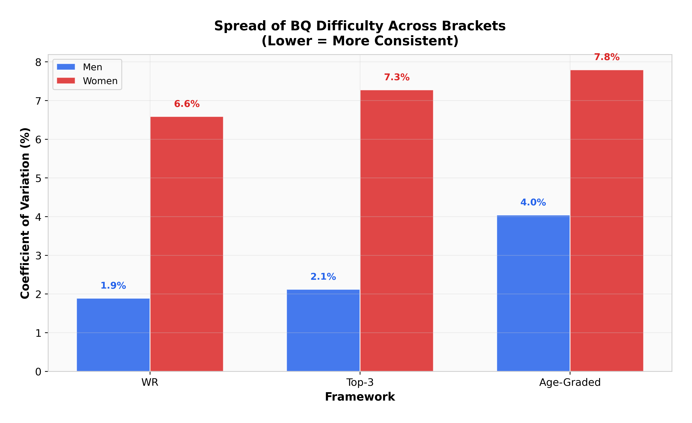
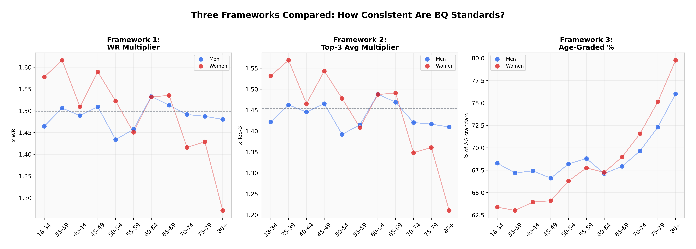
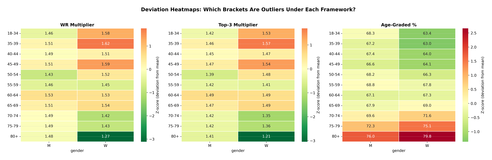
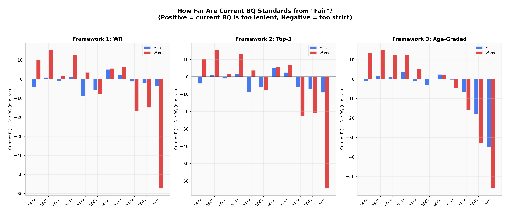
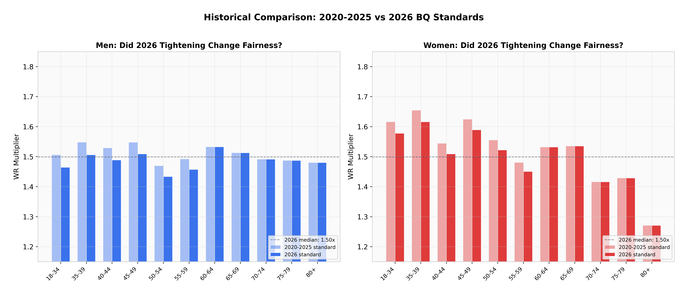
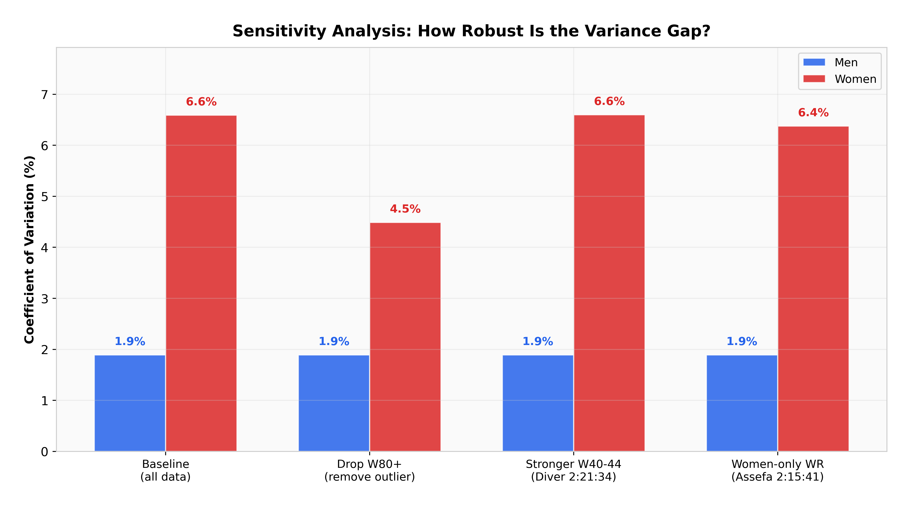
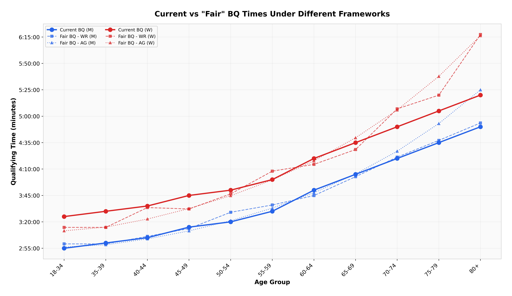

1 · World-record multiplier
The BQ time as a multiple of that bracket's world record. Simple and transparent, and sensitive to a single freak record.
The usual complaint is that Boston is unfair to women.
The BAA publishes qualifying times for 22 age-gender brackets and has never explained how it sets them. Tested against three independent fairness frameworks, the gender-bias claim does not survive: a Welch t-test on the means returns p = 0.81. What does show up is variance — women's brackets are three to four times less consistent than men's — and one bracket, W80+, that is about 57 minutes too strict under every framework tried.
Welch t-test on gender means under the world-record framework. There is no mean-level bias to find.
coefficient of variation, men against women. The inconsistency is the finding, not the average.
how much stricter W80+ is than a uniform multiplier would imply. Current standard 5:20:00; uniform would be 6:17:20.
the median standard across all brackets — a BQ is typically 50% slower than that bracket's world record.
Start · the question
Boston is one of the few big marathons you cannot simply enter. It publishes a qualifying time for each of 11 age groups across two genders, those times decide who gets to run, and the methodology behind them has never been made public.
That makes "are they fair?" answerable only by proxy: pick a reference for how hard each bracket should be, and check whether the standards demand the same proportional effort of everyone. Since any single reference is arguable, this uses three.
The BQ time as a multiple of that bracket's world record. Simple and transparent, and sensitive to a single freak record.
The same idea with an averaged top-three reference, to test whether one outlier performance is driving the result.
Difficulty relative to age-specific biological potential, using the official WMA 2023 factors. A different notion of "should" entirely.
↓ the first result
Welch t-test on the gender means, world-record framework. t = −0.25.
Under age grading the answer is the same: men's brackets average 68.3% of age-graded potential, women's 69.0%, t = 0.42, p = 0.68. Whichever reference you pick, the two genders are asked for the same average effort.
This is the sort of result worth stating plainly even though it is the boring one. The widely repeated criticism is about the mean, and the mean is fine.

↓ the result that does hold
Men's brackets cluster inside a range of 1.43× to 1.53×, a coefficient of variation of 1.9%. Women's run from 1.27× to 1.62×, a CV of 6.6%. Levene's test for equal variance returns W = 5.04, p = 0.036.
That 0.35× gap is the core inconsistency. W35–39 at 1.62× is the most lenient bracket in the whole table; W80+ at 1.27× is the strictest. Two women of different ages, both meeting their standard, are not being asked for remotely the same thing.
Averaging the top three performances instead of using a single record barely moves it — women's CV goes from 6.6% to 7.3%. So this is not one freak record distorting the picture. The structural gaps in older women's brackets survive a more conservative reference.


↓ the one indefensible number
The current W80+ standard is 5:20:00. A uniform multiplier across all brackets would put it at 6:17:20 — a gap of 57 minutes. Under age grading the gap is 56 minutes. Two frameworks built on completely different premises land within a minute of each other.
The cause is visible once you look at the reference: Yoko Nakano's 4:11:45 is an extraordinary record, and pinning a standard to a fixed proportion of it asks eighty-year-old women to come within 27% of one of the great age-group performances in the sport.
This is the single most defensible criticism in the whole analysis. It does not require agreeing with any particular notion of fairness — every framework flags the same bracket.


↓ did 2026 help
2026 brought the largest tightening since 1990 — five minutes across the board for everyone under 60 — in response to 33,249 applications for roughly 24,000 spots. It is reasonable to ask whether that also improved consistency.
It did not. The change lowered every under-60 multiplier by roughly the same proportion and left the 60+ brackets untouched, so the relative structure is unchanged. Women's CV was about 6.8% under the 2020–2025 standards and 6.6% under 2026. Effectively identical.

↓ is it an artefact
A result this dependent on reference records deserves stress-testing, so the analysis re-runs under alternative anchors: dropping W80+ entirely, and swapping the women's open record for Tigst Assefa's women-only 2:15:41 instead of the mixed-race mark.
Men's CV stays at 1.9% in every scenario, which confirms there is no comparable outlier hiding in the men's data. Women's CV drops to 4.5% only when W80+ is removed altogether; alternative record choices move it by less than 0.3 percentage points. The gap is genuine.


↓ what this cannot tell you
With n = 11 per gender the formal tests are underpowered. Levene's test at p = 0.036 clears the conventional threshold and should still be read cautiously, and the same caution applies to reading too much into a p = 0.81 as evidence of no difference rather than simply no detected one.
The top-three framework is explicitly an approximation. Second and third performances are estimated at 3% and 6% slower than the record for well-contested brackets, and 5% and 10% for thin ones, rather than looked up. It is a robustness check, not a measurement, and the writeup flags it throughout.
Non-binary athletes — 110 accepted in 2026 — are excluded, because the BAA itself states it has insufficient data to set appropriate standards for the category. That is a real gap in the analysis rather than a judgement about it.
Finally, "fair" here means equal proportional difficulty against a reference. That is one defensible definition among several. A field-size or participation-based definition could reach different conclusions from the same standards.
Finish · how it was built
pip install -r requirements.txt then python src/analysis.py